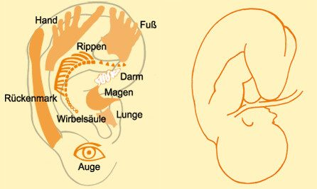

Ohr-Akupunktur
Die Ohr-Akupunktur ist eine europäische Methode, die vom französischen Arzt Dr. Paul Nogier vor etwa 70 Jahren neu entdeckt und weiterentwickelt wurde.
Durch seine Patienten hatte er von Behandlungen an der Ohrmuschel erfahren. Er begann selbst ähnliche Behandlungen vorzunehmen und forschte gleichzeitig intensiv in der Literatur. Von diesen Funden beflügelt, begann Nogier sukzessive eine Landkarte von der Ohrmuschel anzulegen und fand bald heraus, dass sich der gesamte menschliche Körper in Form eines auf den Kopf gestellten Embryos darauf projizieren ließ.

Er entdeckte, dass sich die Ohrpunkte durch einen veränderten elektrischen Hautwiderstand von ihrer unmittelbaren Umgebung unterschieden. Zur vereinfachten Suche dieser Punkte wurde ein Hautwiderstandsmessgerät konzipiert – das Punktoskop. Durch einen Zufall beobachtete Nogier auch eine tastbare Veränderung am Puls, wenn er gleichzeitig einen Ohrpunkt berührte. Dieses Phänomen der nachweisbaren Pulswellenverschiebung nannte man RAC – Reflex auriculocardial – oder Nogier-Reflex.
Unter Mithilfe zahlreicher Forscher gelang es ihm, ein umfassendes und zuverlässiges Diagnose- und Therapiesystem zu entwickeln. Darüber hinaus bestätigte sich in naturwissenschaftlichen Studien die Wirksamkeit dieser Therapie. Der deutsche Arzt Dr. Frank Bahr, ein Schüler Nogiers, hat über Jahre entscheidend zur Weiterentwicklung der Ohr-Akupunktur vor allem mit dem Infrarotlaser beigetragen. Nogier und Bahr haben sich zudem sehr für die Weitergabe dieses Wissens an Ärzte eingesetzt.
Ich selbst wurde in dieser Methode vor mehr als 40 Jahren während meines Medizinstudiums ausgebildet und habe sie in Klinik und Praxis erprobt. Ich verfüge über sehr viel Erfahrung in der Anwendung der Ohr-Akupunktur und vertraue zutiefst sowohl auf die zuverlässige Möglichkeit der Diagnosestellung als auch auf die präzise und meist schnelle Wirkung bei der Behandlung von Schmerzen und Regulationsstörungen aller Art.